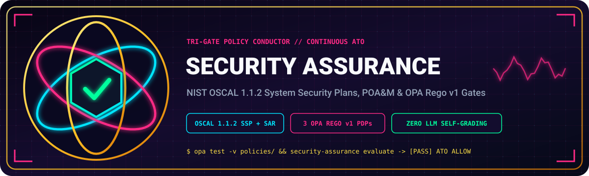

manifest_guard.rego
Enforces ≤ 15 tools (CM-7), env-bound auth without client passthrough (AC-6 / MCP-001), ≤ 32 KiB bounds (SC-5), and AppSec signoff on destructive tools (AC-6(10)).

OSCAL 1.1.2 SSP / SAR / POA&M OPA Rego v1 PDPs 4-Repo Assurance TopologyUniting security-controls (NIST SP 800-53r5 + COSIS), secure-design-patterns (MCP-001..008), and forge (FastMCP 4.x) via deterministic OSCAL 1.1.2 System Security Plans and Open Policy Agent (Rego v1) gates.
Enforces ≤ 15 tools (CM-7), env-bound auth without client passthrough (AC-6 / MCP-001), ≤ 32 KiB bounds (SC-5), and AppSec signoff on destructive tools (AC-6(10)).
Verifies P1 COSIS control completeness in OSCAL SSP, blocks machine self-attestation of human controls (CA-2), and requires POA&M entries for partial findings.
Evaluates caller role + tool annotations per MCP invocation, requiring incident-commander role and INC-BREAKGLASS-* tickets for destructive tools.